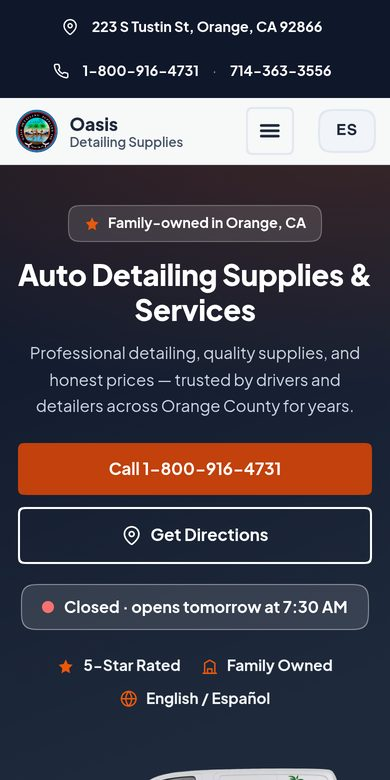
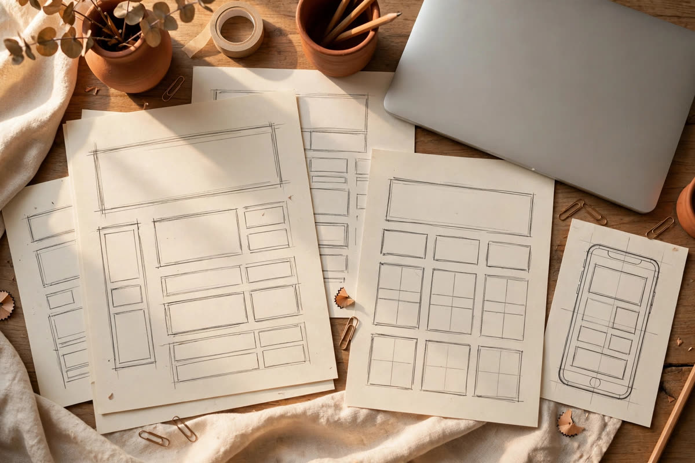

One-person web design, Orange County
A website that brings customers through your door.
I build simple, honest websites for local shops and family businesses. Clear pages, plain words, easy to keep updated.

-
Website design
A clean, welcoming site that tells people who you are, what you offer, and how to reach you. Built by hand, not from a template.
-
Brand redesign
If your logo and colors feel dated or don’t match from place to place, I tidy them up so your business looks like itself everywhere.
-
Launch and support
I put the site live, connect your domain, and stick around after. Small updates and questions are part of the deal.

Recent work
Oasis Detailing Supplies
A family-run detailing shop in Orange, California. I rebuilt their website: new design, clearer pages, and a site the owners can actually update themselves.
-
Call and directions, first thing
The phone number and a directions button sit at the top, where people look first.
-
Open or closed, at a glance
The homepage shows whether the shop is open right now.
-
English and Español
One button switches the site to Spanish for the shop's Spanish-speaking customers.
How it works
Four simple steps, no surprises along the way.
-
Talk
Tell me about your business and what the site needs to do. A short call or a few emails is plenty.
-
Sketch
I plan the pages and sketch the layout, so you can see the shape of it before anything is built.
-
Build
I design and build the site by hand, checking it on phones and computers as I go.
-
Launch
I put it live on your domain, and I stick around to help after it launches.

Hi, I’m Jesus.
I run Pinstack Design from my home in Orange County, California. I build websites the way a good neighbor would: honestly, carefully, and with your customers in mind.
When you hire me, you get me.
- One person, start to finish
- You talk to me. I design it, build it, and launch it.
- Made for non-technical owners
- No jargon, no upsells, nothing you have to figure out alone.
- Local and reachable
- Based in Orange County. I answer my own email.
Let’s build your site.
Tell me about your business and what you would like your website to do. I reply to every email myself.
A few lines is plenty to get started.